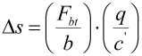
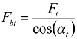

|
|
|


理论接触刚度
图形显示接触刚度随旋转角度的变化。接触刚度基于实际齿形计算。计算考虑了齿变形、齿轮体变形以及赫兹压力引起的压扁。计算按照 Weber/Banaschek [21] 进行。
对于斜齿轮，总刚度使用截面模型计算（齿宽被分成 100 个截面，并对所有截面求和得到刚度）。另见 [24] 第 203 页。传动误差根据 [7] 确定。周向传递变化量 Δs 等于：
|  | (22.5) |
|  | (22.6) |
其中 (q/c') 由 cgam 代替。
注意：
理论接触刚度与有效轮齿在载荷下的接触刚度可能差异很大。
Theoretical contact stiffness
The graphical display shows the contact stiffness depending on the angle of rotation. Contact stiffness is calculated on the basis of the real tooth forms. The calculation takes into account tooth deformation, gear body deformation, and flattening due to Hertzian pressure. The calculation is performed according to Weber/Banaschek [21].
For helical toothed gears, the overall stiffness is calculated with the section model (the facewidth is split into 100 sections and stiffness is added over all sections). See also [24], page 203. The transmission error is determined according to [7]. The transmission variation in the peripheral direction Δs equals:
| (22.5) | |
| (22.6) |
where (q/c') is replaced by cgam.
Note:
The theoretical contact stiffness and the contact stiffness of the effective toothing under load can be quite different.